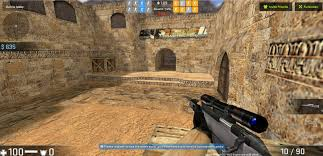

Les different types de Jeu-Vidéo
Aujourdhui, il existent différents type de jeu comme:
- Aventure
- Le RPG
- Le FPS(First-Person Shooter)
- Wargames
- MMORPG (Massively Multiplayer Online Role Playing Game) ou MMO (Massively Multiplayer Online)
- Sport
- Simulation
Final Fantasy 7 est par exemple un RPG

le Jeu mythique Couterstrike est un des premiers jeux FPS
